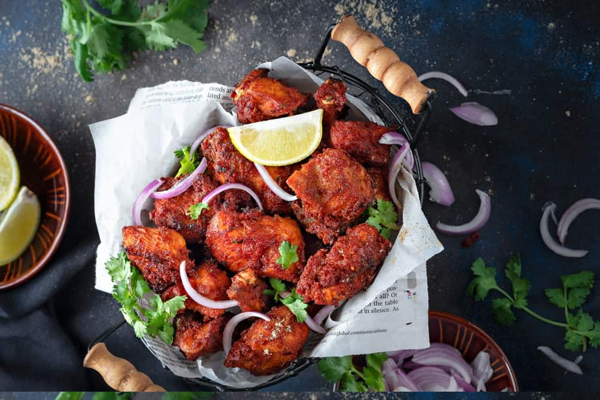

Ingredients
- 11 kg Chicken on bone
- 1 tablespoon garlic paste
- 7-8 curry leaves
- 1 tablespoon ginger paste
- ½ teaspoon pepper powder
- 1 teaspoon green chili paste
- 2 tablespoons kashmiri red chilli powder
- 1 ½ teaspoon coriander powder
- 2 tablespoons thick yogurt
- 1 teaspoon garam masala powder
- 1 teaspoon soy sauce
- Salt to taste
- 6-7 tablespoons cornflour
- Oil for frying
- Chaat masala for sprinkling
Steps
- In a large bowl, add chicken pieces
- Then, add all the ingredients from garlic paste to salt, mentioned below
- Combine everything nicely
- Cover and allow it to marinate for at least 2 hours under refrigeration
- Add cornflour and mix well
- Heat oil in deep pan or Kadhai (wok)
- Once the heats up well, carefully slide-in the marinated chicken and fry them on medium high heat until done.
- Take them out and drain onto an absorbent towel.
- Sprinkle some chaat masala on fried chicken
- Serve them with onions, lemon wedges on the side